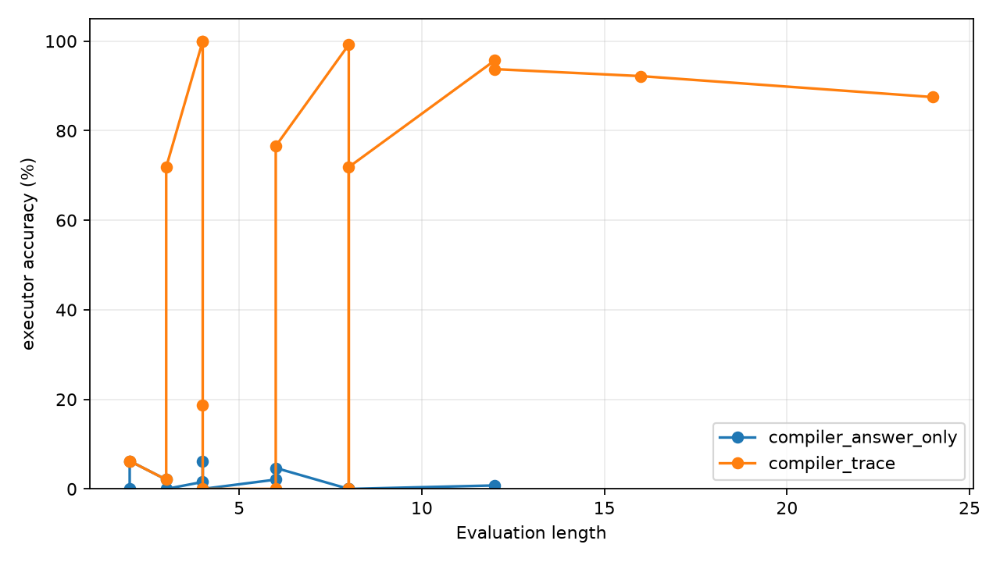
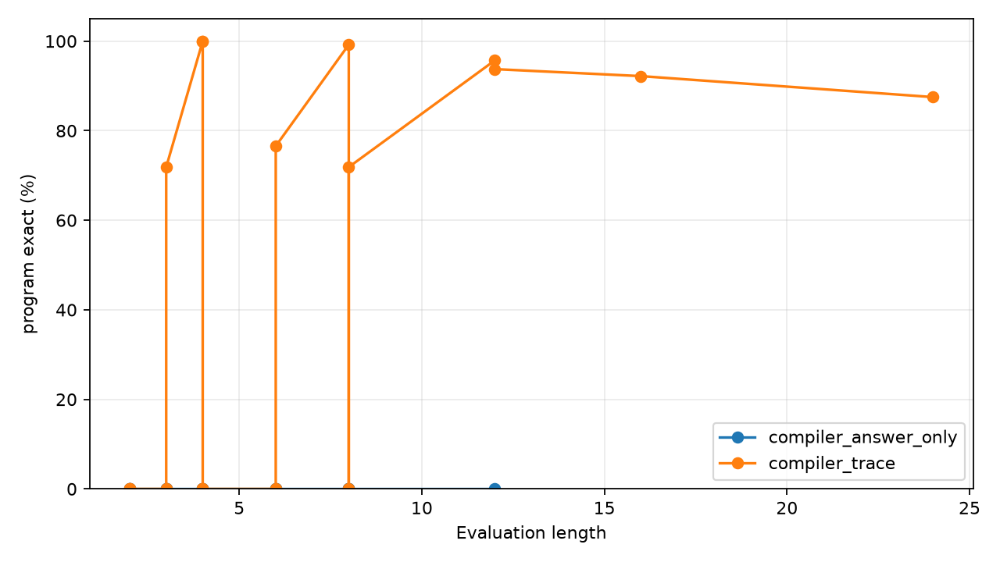

Qwen Structured Bridge
Abstract
This experiment tests a frozen Qwen3.5-4B encoder attached to a trainable structured latent executor.
The prompt describes a modular arithmetic program. The bridge reads selected Qwen hidden states, compiles them into an initial value and per-step program symbols, and an invisible executor runs the program to produce the answer.
Task
Each prompt specifies a value x modulo 97 and a sequence of operations:
Initial x = 42. Step: add 17. Step: multiply by 3. Step: subtract 5.
The target is the final value of x. The executor supports ADD, SUB, and MUL under modulo 97 arithmetic.
Model
Qwen3.5-4B is loaded in 4-bit and kept frozen. The bridge reads hidden states at numeric token spans and operation line prefixes, then predicts initial value, operation, and argument logits. A differentiable executor composes distributions during training. For strict evaluation, the compiled symbols are argmaxed and executed exactly.
Controls
direct: an answer classifier trained on the same frozen Qwen answer-line feature.compiler_trace: the structured compiler trained with symbol trace supervision plus executor answer loss.compiler_answer_only: the structured compiler trained only from final answer loss through the soft executor.
Main Results
The main run uses 1024 training examples with lengths 1-4 and evaluates on lengths 4, 8, and 12.
| Variant | L=4 accuracy | L=8 accuracy | L=12 accuracy | L=12 target mass | L=12 init | L=12 op | L=12 arg | L=12 program exact |
|---|---|---|---|---|---|---|---|---|
direct | 0.0% | 1.2% | 0.4% | n/a | n/a | n/a | n/a | n/a |
compiler_trace | 100.0% | 99.2% | 95.7% | 94.1% | 100.0% | 99.6% | 100.0% | 95.7% |
compiler_answer_only | 1.6% | 0.0% | 0.8% | 1.0% | 1.2% | 33.5% | 3.1% | 0.0% |


Length Scale Check
| Length | Executor accuracy | Target mass | Init acc | Op acc | Arg acc | Program exact |
|---|---|---|---|---|---|---|
| 4 | 100.0% | 99.9% | 100.0% | 100.0% | 100.0% | 100.0% |
| 12 | 93.8% | 93.6% | 100.0% | 99.5% | 100.0% | 93.8% |
| 16 | 92.2% | 91.5% | 100.0% | 99.6% | 100.0% | 92.2% |
| 24 | 87.5% | 82.7% | 100.0% | 99.5% | 100.0% | 87.5% |
Interpretation
The result supports a specific claim: frozen Qwen hidden states can drive a small structured bridge that configures and runs an invisible latent executor. The executor compiles text into program symbols, and strict accuracy tracks whether the whole compiled program is correct.
The direct control stays at 97-way chance. The structured bridge wins because the output space is decomposed into reusable program symbols that the executor can compose.
The answer-only control does not learn the latent program interface under this budget. The trace-supervised condition shows that the interface is usable; the answer-only condition shows that discovering it from sparse final reward remains a separate training problem.
Limitations
The task is synthetic modular arithmetic with standardized text templates. The executor operation set is fixed in advance. The bridge receives direct symbol trace supervision in the successful condition. Qwen is frozen, so this is an attachment experiment rather than full model posttraining.
Artifact Layout
experiments/qwen_structured_bridge/
large_artifacts/qwen_structured_bridge/checkpoints/